Ope...A Life
2
#ope #pnw
It's our 29th anniversary. We love snow. We enjoy The Shining (and The Shining and The Shining). What better place to go than Timberline Lodge on Mt. Hood?
The Stanley Hotel in Estes Park, maybe? That's coming up at some point.
Mountains are a trip. In more ways than one. The drive was about 3.5 hours. It wasn't until the last twenty minutes or so that we started seeing snow. We went from no snow on the ground and blue skies with a bit of rain now and then to 98 inches of snow base and a blizzard. In twenty minutes.
!
We were so happy. Did I mention we love snow?
There were so many snow plows. Our first sight upon leaving Hwy 26 for Timberline Hwy at 4000 feet of elevation? A snow plow. After another thousand feet of elevation? Plow. After another thousand feet of elevation (putting us squarely in the hotel parking lot)? Plow.

There are a surprising number of parking lots up there. We eventually found the right one using our Double Secret Timberline Lodge credentials to get in. Spent twenty minutes driving around and around dodging the snow plow waiting for a space to free up. You know how in the winter when it snows and the parking lines are covered and some cars have a couple of inches of snow on them because they've been sitting for a day or two? Well, it was kinda like that, but worse.
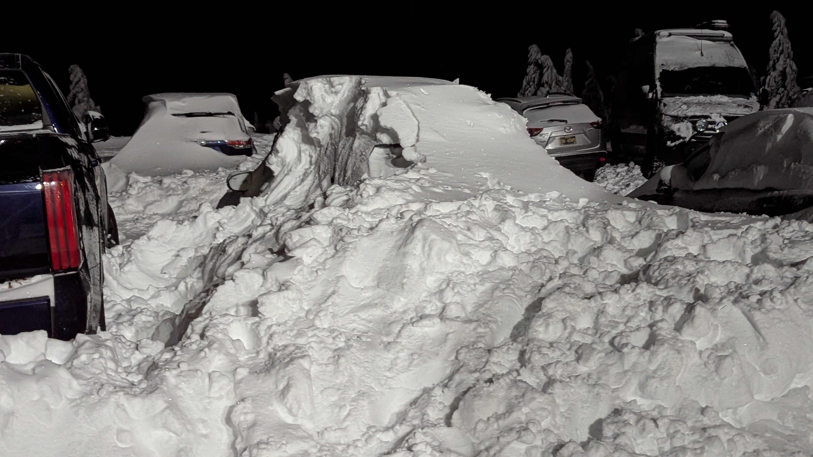
Luckily, I was playing nice and following the orders of the poor, Sisyphean bastard tasked to plow the parking lot. Also luckily, Stacy was playing nice and went out to check on a potential parking space. She ended up talking to the plow angel - yes, angel, I have no idea how catholic saints are made, but that plow driver must have certainly met all the criteria - and they ended up plowing out an extra space for us.
Stacy has mad people skills.
We grabbed our bags and hoofed it to the entrance of Timberline Lodge.
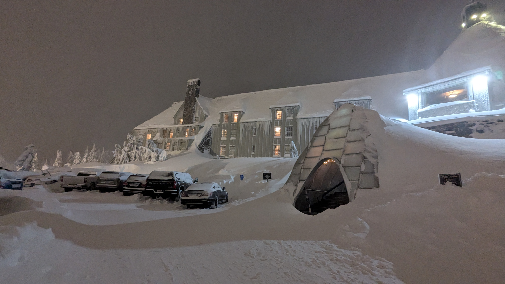
We walked into a big, open area with a twenty foot high, three-sided fireplace in the middle of it. Each of the three fireplaces had to be six feet tall. They burned a not entirely unpleasant smelling wood (you'll have to forgive me here, I do not enjoy the smell of wood-burning fireplaces, but while I was trying to breathe normally I heard multiple people around me exclaim how wonderful it smelled...I'm sure they couldn't all be wrong) and there were ski and board bums lounging on the benches all around it trying to warm up a bit before they went out to conquer the mountain again.
Did I mention Timberline was set to receive 18 inches of fresh snow this fine day? Winds were to gust up to 48mph? The temperature would be in the 20s fahrenheit? Glorious weather!
There were a lot of ski folk around that fire.
We made our way to our room and noticed the view out the window was slightly obscured.
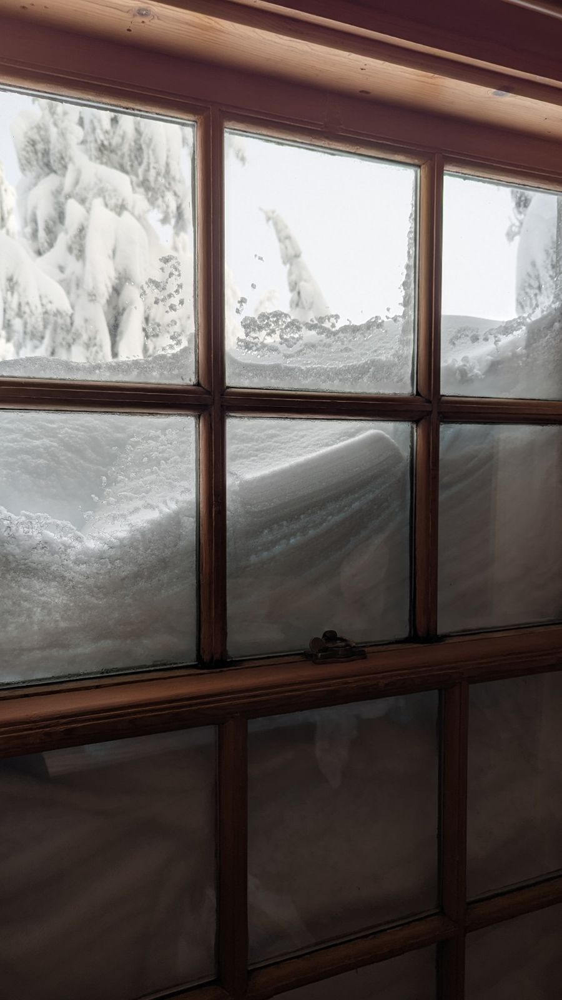
We were on the second floor.
We explored the interior for a while. Found the pool and the sauna. Stacy found the ice maker. Always with the ice maker. We found a giant three story communal area set above the fireplace on the ground floor. This big communal area also had an enormous three-sided fireplace that rose to the ceiling. There was comfy seating everywhere and giant windows with wonderful views. We found a place to get some nibbles (bread for me - meh, and Stacy with crab and artichoke dip - pretty good).
After nibbles? A stroll outside to see the snow flying, the wind blowing, and the lights illuminating the few brave skiers hitting the slopes.
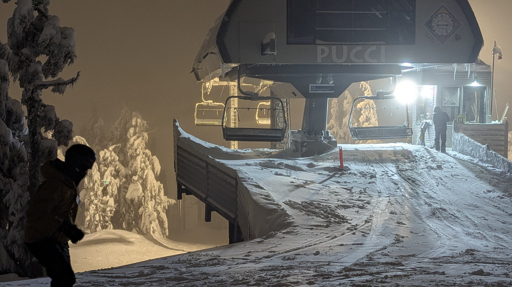
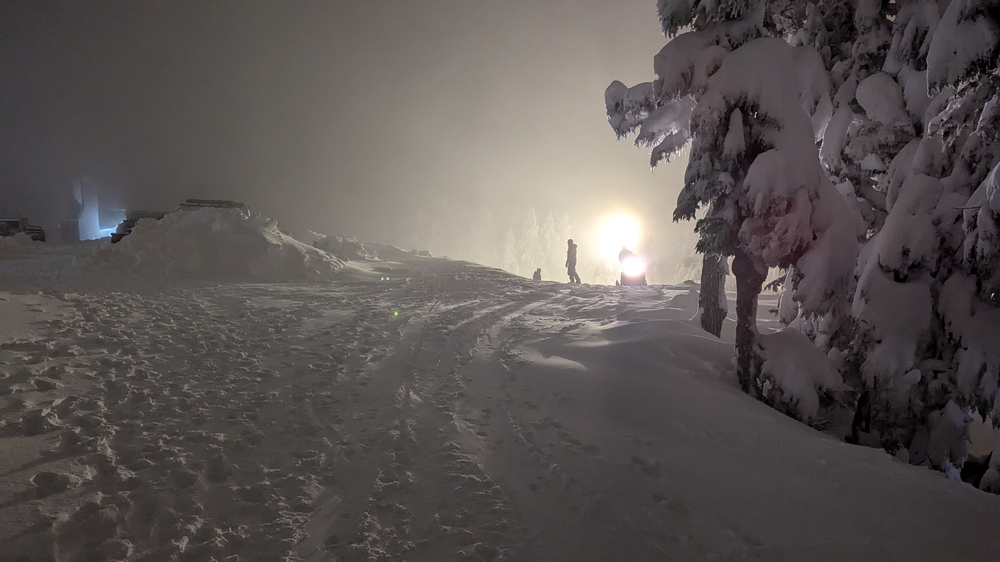
The view of Timberline Lodge was pretty groovy, too.
We headed back to our room for a good night's sleep. Which I didn't get. Turns out my allergies kicked into high gear with all that wood burning going on. Took eight benadryl to settle me down enough to get a couple hours in. I'd be popping benadryl the rest of the time we spent there, but it was oh so worth it.
The next day - Anniversary! We woke up and hit the breakfast buffet. Not worth the price, but they had some fresh fruit which was nice. We roamed around outside for awhile then I went back to the room for a benadryl-fueled nap and Stacy went snowshoeing. It was her first time. She grabbed a rental and went for a nice walk on the groomed path (and when she stepped off the trail to see what would happen she went knee deep in some new powder).
Some pics and a vid from her walk.
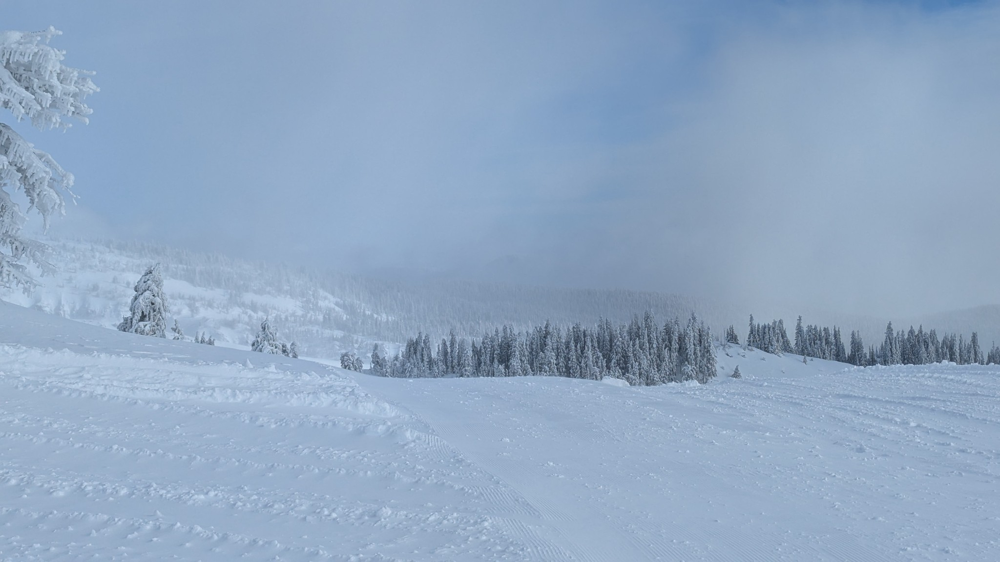
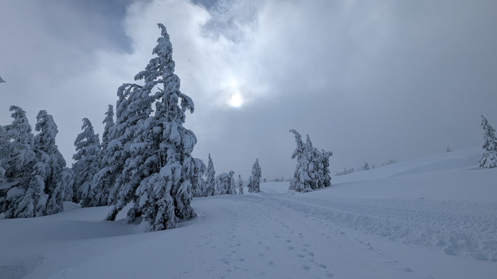
More napping for both of us. Woke up in time for our dinner reservation. Our room didn't come with a mini fridge, so how, might you ask, did we chill the bubbly for our post-dinner drink?
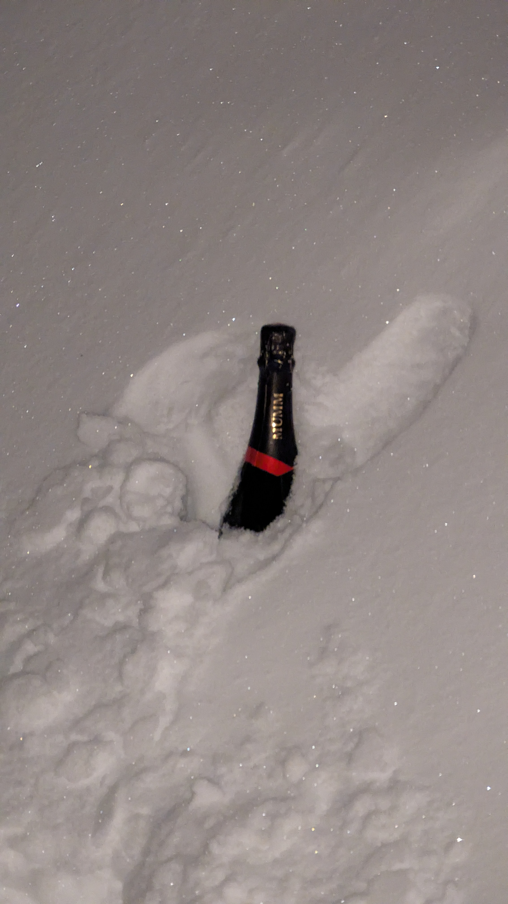
Buried it in a snowbank before dinner. The champagne wasn't our usual, this had been gifted to us by friends to try. Very kind of them to provide the hooch.
Dinner was pretty good. My New York Strip was decent and Stacy's Seared Alaskan Halibut was darn good. The discussion was the real winner for the evening, though. (Well, that and the dessert which I'll get to shortly.) We've been together for twenty nine years. Nearly three decades. It seems impossible. It's easy, in relationships that last this long, to get caught up, or out, or, well, for three decades you have to grow as a person and grow as a couple, and those two things are sometimes at odds. Luckily for us, after a serious talk about us we agreed we'd been doing pretty well together. And I have to say, Stacy was amazing with just listening to me ramble and work things out while I was talking. I am a very fortunate man.
And dessert! Lo those twenty nine years ago, our wedding cake was a Pepperidge Farm Coconut Layer Cake. It was inexpensive (we saved all our money for the three week honeymoon in Europe) and it's something we could find every year on our anniversary. However, after the long dinner conversation, and even knowing we had our wedding cake to look forward to, we decided to get dessert at the restaurant. I know. So kooky. You can't make this kinda stuff up. What we got? The Skillet Baked Chocolate Chip Cookie for 2 (with vanilla ice cream on top). I was ready for it to be a novelty thing that didn't taste any better than what we made at home, but this dessert was amazing. Easily the best dessert I'd had in a restaurant in years. So good!
And not a single picture of it.
We let dinner settle then went back outside for another stroll. The sky had cleared and the stars were out. The stars were so plentiful and the night so clear that Stacy wondered if we'd even bothered to look up before. We grabbed the hooch, took a pic, and headed back to our room.
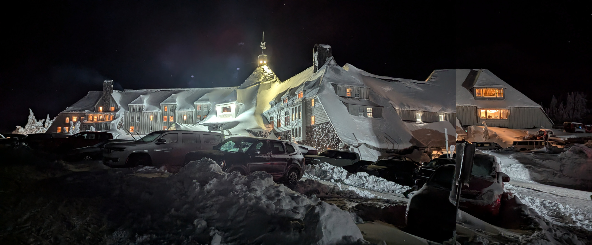
We woke up early. We wanted to get home by early afternoon at the latest. It was New Years Eve. We packed up, peeked out the window one last time, and were treated to a clear view of the peak of Mt. Hood.
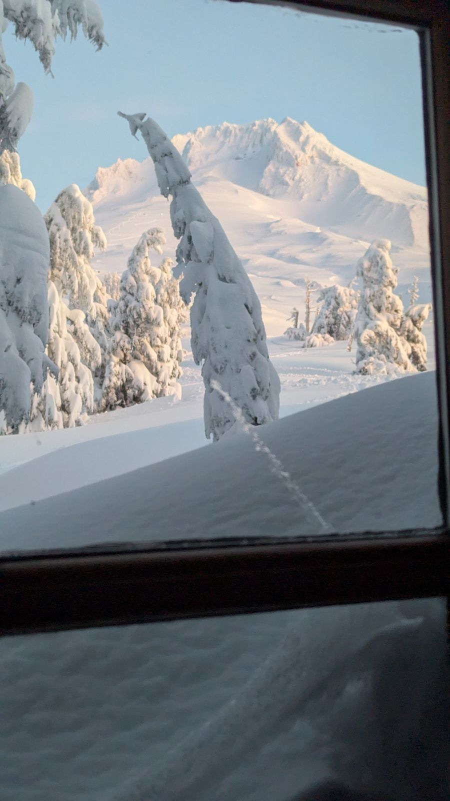
We dragged the luggage outside the hotel then had to set it down so we could get a pic of Mt. Jefferson from the entrance of Timberline Lodge. Mt. Jefferson is forty miles distant as the bird flies.
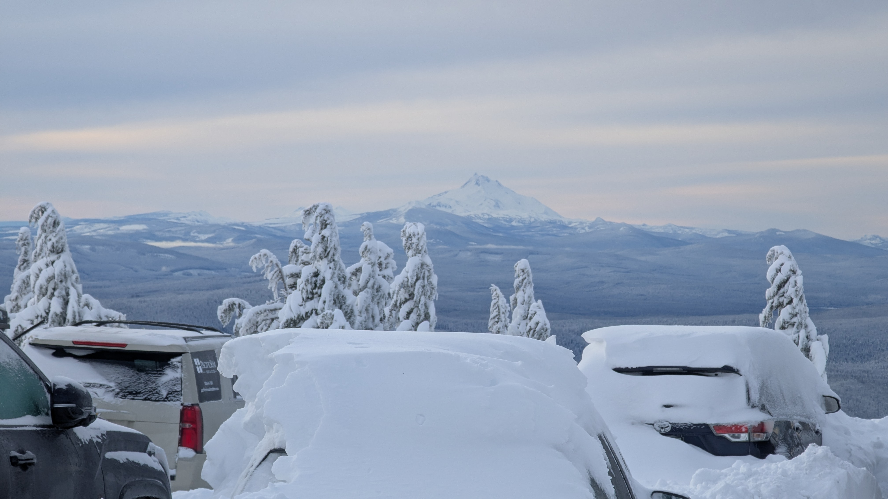
The skies, the scenery, and the snow were all beautiful as we made our way home. And we saw one last plow before turning onto the highway. Stay golden, ponyboy.
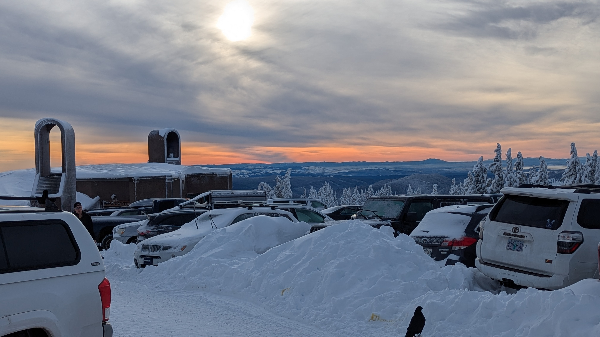
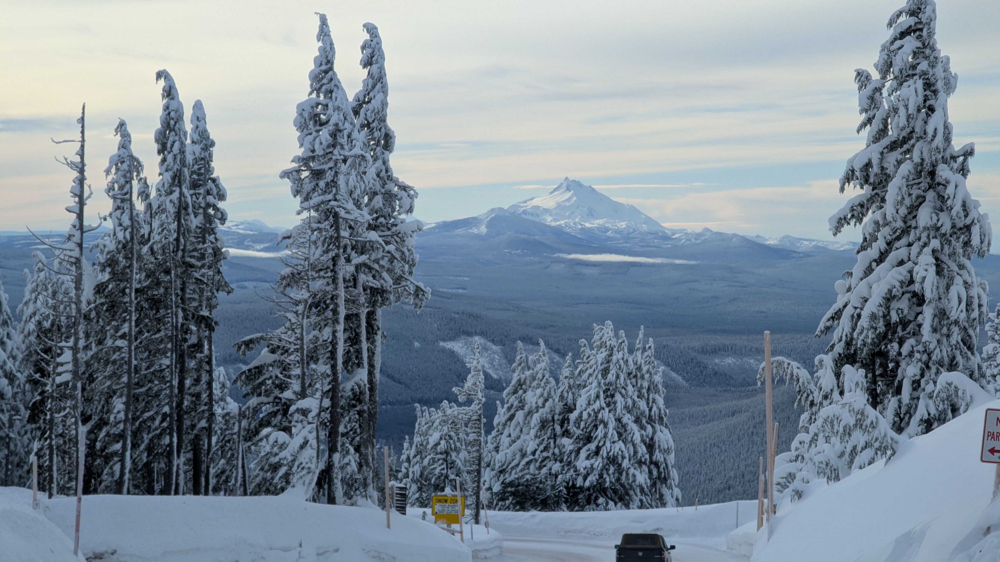
caveat lector